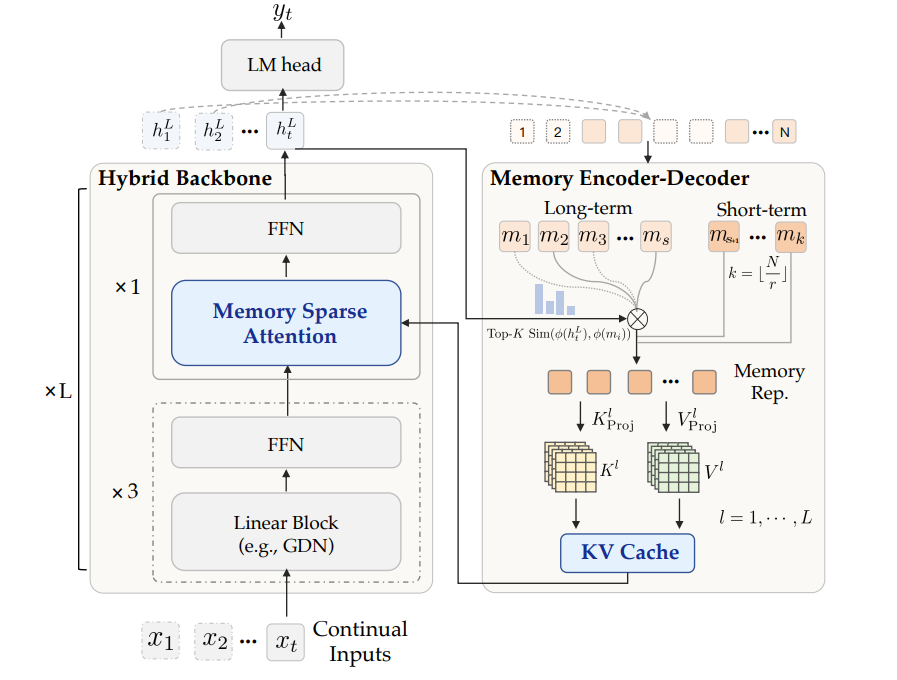
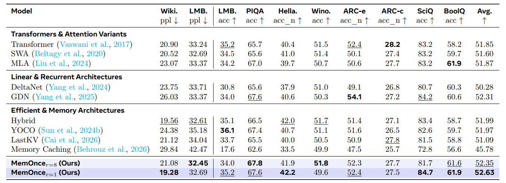
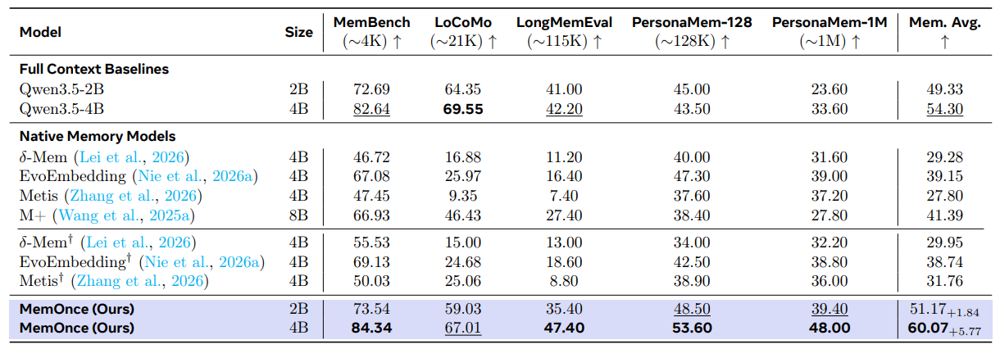

One memory path across every attention layer
One compact bank of final-layer states, one retrieval pass per query, and on-demand KV decoding for every attention layer.

Every turn re-attends to all L tokens and keeps a KV cache that grows with context — O(LN²D) attention and 32.05 GB active cache at 1M.
Encode each segment once, keep an O(CD) state, run one top-K retrieval per query, decode KV only for the selected blocks — 25 MB active cache at 1M.
Foundation capability & long-context memory
The same architecture works from scratch as a language model, and as a post-training adaptation of a frozen Qwen3.5 backbone.

r = 8 compression costs ~0 accuracy; MemOncer=1 reaches the best 52.63 average across eight downstream tasks, with the lowest validation perplexity.

60.07 average at 4B (+5.77 over full context), best on 4 of 5 benchmarks — the first native memory model to beat full context.
Zero-shot, the same 1024-d memory descriptors reach 69.21 R@10 / 53.06 N@10 and lift A-MEM by +17.2 as a reranker.
The longer the context, the bigger the gap
Prefill time, decoding throughput and active GPU cache as context grows from 32K to 1M. Solid blue is MemOnce, dashed gray is the full-context Qwen3.5-4B baseline; the shaded band is the widening gap.
Log scale for prefill time and active cache; GB converted at 1024 MB, hence 32.05 GB / 25 MB = 1313× at 1M. At 32K the full-context baseline is still slightly faster (0.87 s vs. 1.38 s) — MemOnce leads from 128K onward and is 35.8× faster than M+ at 1M (1479.50 s). Paper efficiency table, 4B scale, single H100.